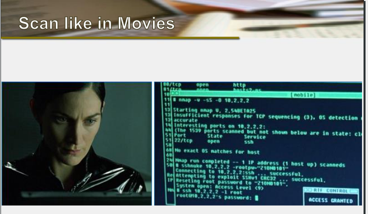
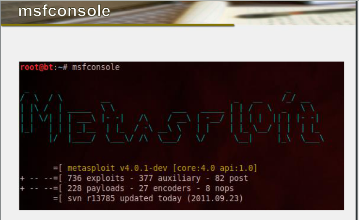
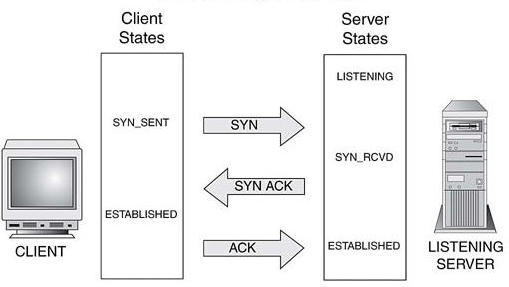

Network Security consists of the provisions and policies adopted by a network administrator to prevent and monitor unauthorize access, misuse, modification or denial of a computer network and network-accessible resources.
1998: Robert Morris,Jr a 23 yr old Cornell graduate student, released a worm that overran Arpanet, incapacitating almost 6000 computers.1991: David L.Smith 31 yr old created a worm "Melissa", causing damage to 1000 computers.2001: Anna Kournikova virus. Promising photos of the tennis star mailed itself to the every person in the victim's address book.2008: The headquarters of the Obama and McCain presidential compaigns were hacked.When Interest rules supreme!!!
You must be a good programmer.You must be a good developer.You must be a good Tester.A bug bounty program is a deal offered by many website and software developers by which individuals can receive recognition and compensation for reporting bugs, especially those pertaining to exploits and vulnerabilities.
Bugcrowd : Vulnerability reporting platform with the largest crowd of security researchers on the planet.
"A fool with a tool is a more dangerous fool..."
Linux versions
Frameworks & Tools
Nmap (Network Mapper) is a security scanner used to discover hosts and services on a computer network, thus creating a "map" of the network.
The Metasploit Framework is an advanced open-source platform for developing, testing, and using exploit code. This project initially started off as a portable network game and has evolved into a powerful tool for penetration testing, exploit development, and vulnerability research.
A three-way-handshake is a method used in a TCP/IP network to create a connection between a local host/client and server. It is a three-step method that requires both the client and server to exchange SYN and ACK (acknowledgment) packets before actual data communication begins.
DNS is a hierarchical distributed naming system for computers, services, or any resource connected to the Internet or a private network.
recall tcp 3 way handshake
HBGary is a subsidiary company of ManTech International, focused on technology security.